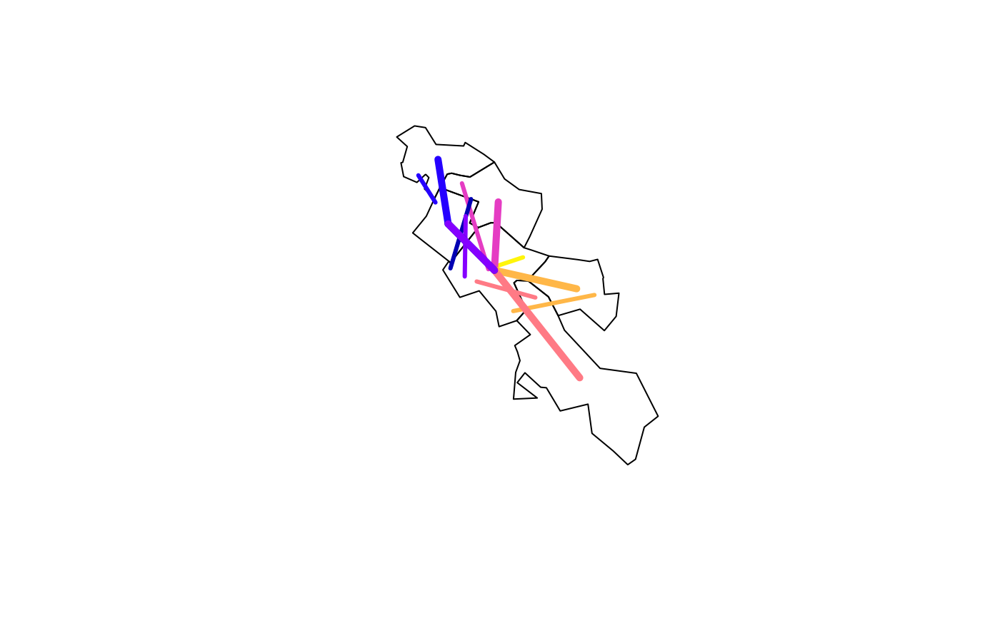
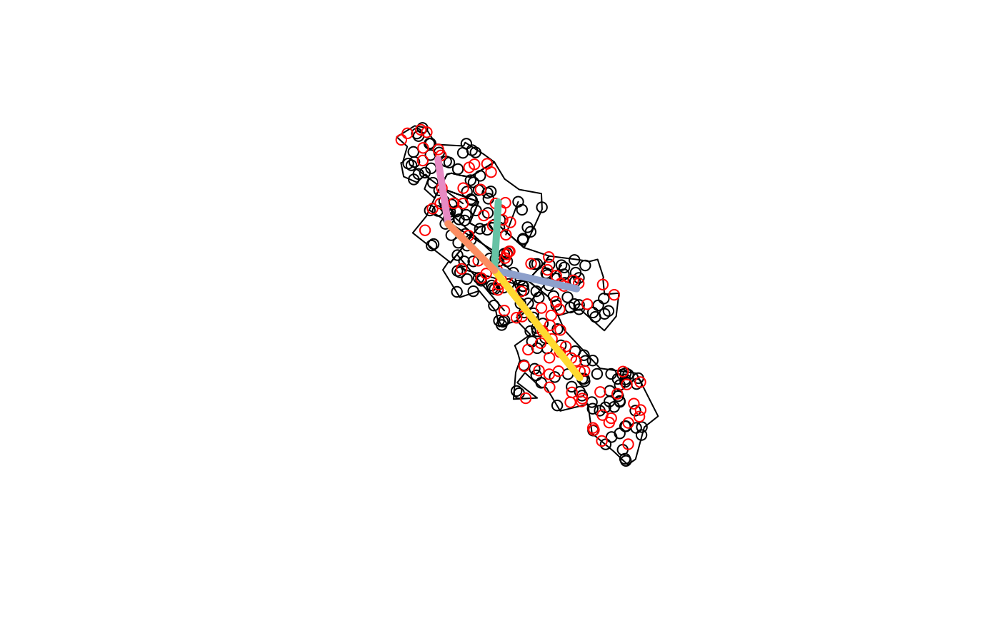
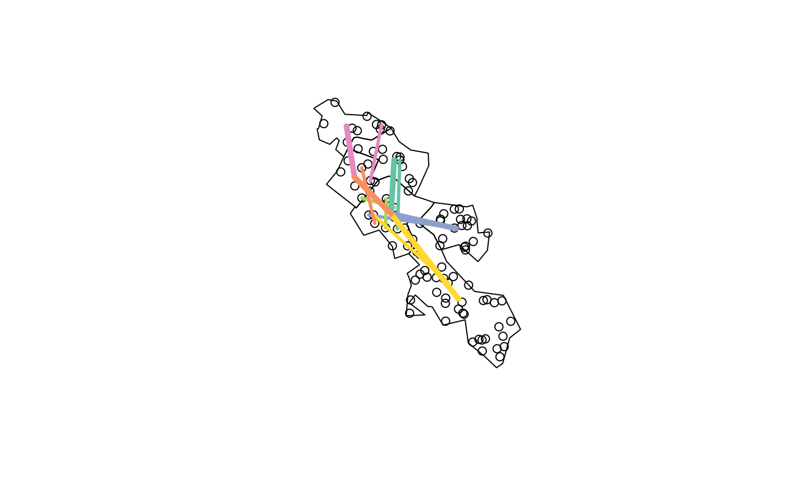
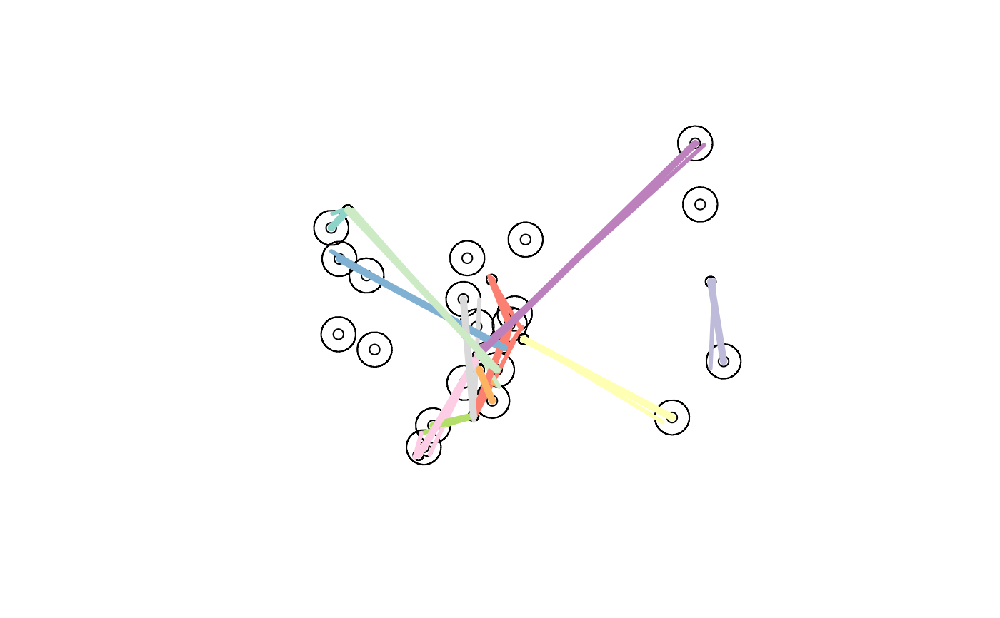

R/jitter.R
od_jitter.RdThese functions tackle the problem associated with OD data representing movement to and from large zones. Typically the associated desire lines start and end in one point per zone. This function produces desire lines that can start and end anywhere (or at predefined points) within each zone. See issue #11 for details.
od_jitter( od, z, zd = NULL, subpoints = NULL, code_append = "_ag", population_column = 3, max_per_od = 1e+05, keep_ids = TRUE, integer_outputs = FALSE, subpoints_o = NULL, subpoints_d = NULL, disag = TRUE )
| od | An origin-destination data frame |
|---|---|
| z | Zones representing origins and destinations |
| zd | Zones with ids matching the destination codes in input OD data |
| subpoints | Points, lines or polygons within the zones. These define the OD data start/end points. |
| code_append | The name of the column containing aggregate zone names |
| population_column | The column containing the total population (if it exists) |
| max_per_od | Maximum flow in the population_column to assign per OD pair. This only comes into effect if there are enough subpoints to choose from. |
| keep_ids | Should the origin and destination ids be kept?
|
| integer_outputs | Should integer outputs be returned? |
| subpoints_o | Points within origin zones representing possible destinations |
| subpoints_d | Points within destination zones representing possible destinations |
| disag | Should the od_disaggregate function be used as a 'back end' where possible? TRUE by default. See https://github.com/ITSLeeds/od/issues/39. |
An sf data frame
# Basic example od = od_data_df z = od_data_zones_min dlr = od_jitter(od, z) # desire_lines_random #> 0 origins with no match in zone ids #> 0 destinations with no match in zone ids #> points not in od data removed. #> Using od_disaggregate #> Input object is sf, attempting to convert to a data frame #> Creating origin and destination points at random locations desire_lines = od_to_sf(od, z) #> 0 origins with no match in zone ids #> 0 destinations with no match in zone ids #> points not in od data removed. plot(z$geometry) plot(dlr["all"], add = TRUE, lwd = 3) dlr$all #> [1] 966 1145 1791 1035 453 286 753 desire_lines$all #> [1] 966 1145 1791 1035 453 286 753 plot(desire_lines["all"], add = TRUE, lwd = 5)  # Example showing use of subpoints subpoints_o = sf::st_sample(z, 200) subpoints_d = sf::st_sample(z, 100) dlr_d = od_jitter(od, z, subpoints_o = subpoints_o, subpoints_d = subpoints_d) #> 0 origins with no match in zone ids #> 0 destinations with no match in zone ids #> points not in od data removed. plot(z$geometry) plot(dlr_d$geometry, add = TRUE) plot(subpoints_o, add = TRUE) plot(subpoints_d, col = "red", add = TRUE) plot(desire_lines, add = TRUE, lwd = 5) #> Warning: ignoring all but the first attribute  # mapview::mapview(desire_lines) + dlr + z # interactive map sp = sf::st_sample(z, 100) dlr2 = od_jitter(desire_lines, z, subpoints_o = sp, subpoints_d = sp) plot(z$geometry) plot(sp, add = TRUE) plot(dlr2, add = TRUE, lwd = 3) #> Warning: ignoring all but the first attribute plot(desire_lines, add = TRUE, lwd = 5) #> Warning: ignoring all but the first attribute  # Example showing jittering with origin and destination zones od = od_data_df2 z = sf::st_buffer(od_data_centroids2, dist = 1000) zd = sf::st_buffer(od_data_destinations, dist = 300) zd = zd[zd[[1]] %in% od[[2]], ] desire_lines = od_to_sf(od, od_data_centroids2, od_data_destinations) #> 0 origins with no match in zone ids #> 0 destinations with no match in zone ids #> points not in od data removed. dlr = od_jitter(od, z, zd) #> 0 origins with no match in zone ids #> 0 destinations with no match in zone ids #> points not in od data removed. plot(z$geometry) plot(od_data_centroids2$geometry, add = TRUE) plot(od_data_destinations$geometry, add = TRUE) plot(zd$geometry, add = TRUE) plot(dlr, add = TRUE, lwd = 3) #> Warning: ignoring all but the first attribute plot(desire_lines, add = TRUE, lwd = 5) #> Warning: ignoring all but the first attribute  # Larger example with only subset of matching zones # od = od_data_df_medium # od_sf = od_to_sf(od, od_data_zones) # dlr3 = od_jitter(od_sf, od_data_zones) # plot(od_sf[od$all > 200, 1]) # plot(dlr3[od$all > 200, 1]) # mapview::mapview(od_sf$geometry[od$all > 200])